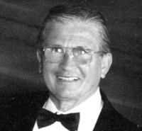

ANGLEHART,
Roland (Rolly)
December 15, 1924 October 11, 2007.

After a long battle with
Parkinson's, Rolly passed away peacefully at the Oak Bay Lodge in Victoria, BC
with his family at his side.
He will be sorrowfully missed by his wife Helen,
daughter Brenda (Chartrand), and sons Dwight and James, as well as loving
grandchildren Colin, Mara, Blandine and Sadrac.
He also leaves behind his sisters Dolores (Perras) and
Raymonde (Barbor).
Professional boxer, fitness pioneer, house builder,
skilled kitchen designer, loving father and husband, Rolly was born in
StGodefroi, Quebec and lived in Sudbury and Ottawa where he was involved in
real-estate and the management of several health clubs.
As sales manager at Vic Tanny's Gym in Ottawa, Rolly
started one of the first aerobics classes in Canada.
Rolly moved his family to Victoria in 1973 where he spent the rest of his career
as part owner of Crestwood Kitchen Cabinets.
Rolly was known for his passion for fishing and boxing. For the Victoria held
Commonwealth Games in 1992, Rolly was involved in the youth boxing programs.
Rolly loved keeping in touch regularly by phone with friends
and family. Fond memories will be cherished of how he touched all of our lives
with his love, values, honesty, good nature, and a demonstrated passion for
quality in all his work.
The family would like to thank Dr. Linda Ottley
and also staff at Oak Bay Lodge.
A service will be held on Tuesday, October 16 at 1:00pm at Sacred Heart church,
4040 Nelthorpe St, Victoria with a reception to follow. 417051
Published in the Victoria Times-Colonist on 10/13/2007.